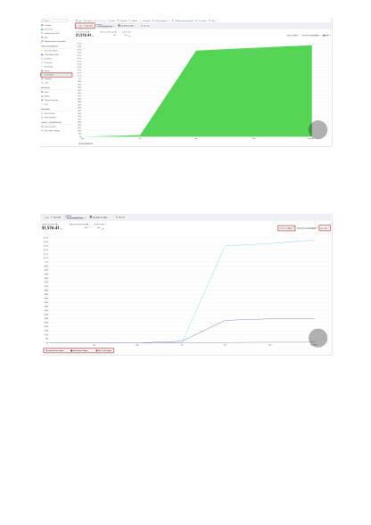
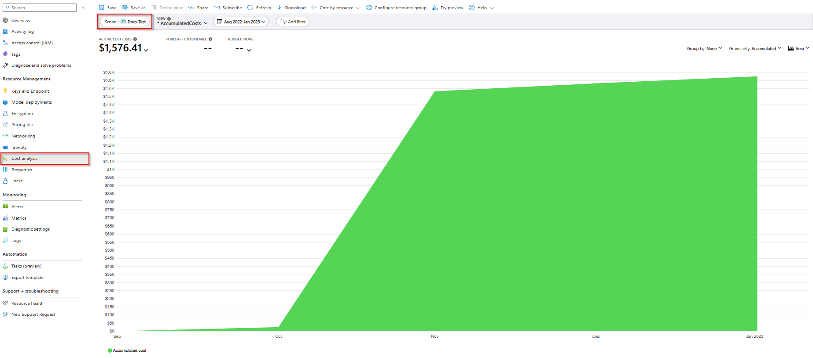
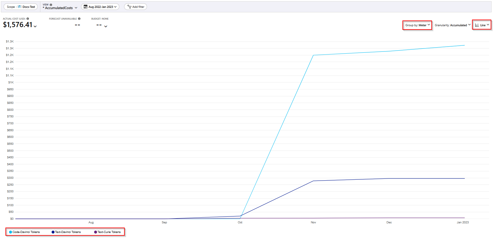

To understand the breakdown of what makes up that cost, it can help to modify Group
by to Meter and in this case switching the chart type to Line. You can now see that for
this particular resource the source of the costs is from three different model series with
Text-Davinci Tokens representing the bulk of the costs.
It's important to understand scope when evaluating costs associated with Azure OpenAI.
If your resources are part of the same resource group you can scope Cost Analysis at
that level to understand the effect on costs. If your resources are spread across multiple
resource groups you can scope to the subscription level.
However, when scoped at a higher level you often need to add additional filters to be
able to zero in on Azure OpenAI usage. When scoped at the subscription level we see a
number of other resources that we may not care about in the context of Azure OpenAI
cost management. When scoping at the subscription level, we recommend navigating to
the full Cost analysis tool under the Cost Management service. Search for "Cost
Management" in the top Azure search bar to navigate to the full service experience,
which includes more options like creating budgets.
{kind=link}
{kind=link}